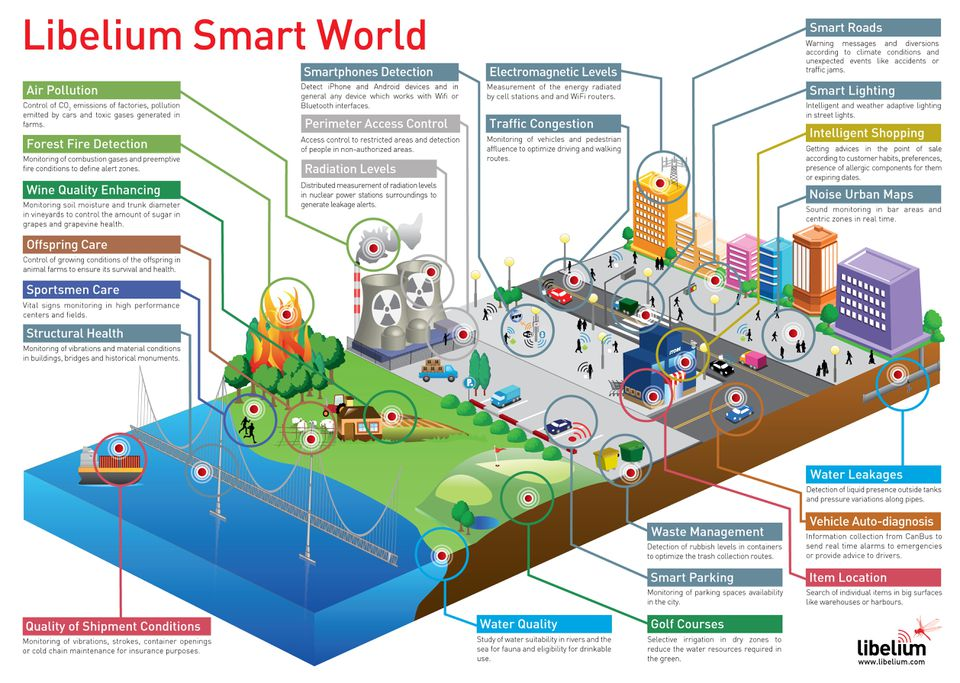

The "Internet of things" (IoT) is becoming an increasingly growing topic of conversation both in the workplace and outside of it. It's a concept that not only has the potential to impact how we live but also how we work. But what exactly is the "Internet of things" and what impact is it going to have on you, if any? There are a lot of complexities around the "Internet of things" but I want to stick to the basics. Lots of technical and policy-related conversations are being had but many people are still just trying to grasp the foundation of what the heck these conversations are about.
Let's start with understanding a few things.
Broadband Internet is become more widely available, the cost of connecting is decreasing, more devices are being created with Wi-Fi capabilities and sensors built into them, technology costs are going down, and smartphone penetration is sky-rocketing. All of these things are creating a "perfect storm" for the IoT.
Simply put, this is the concept of basically connecting any device with an on and off switch to the Internet (and/or to each other). This includes everything from cellphones, coffee makers, washing machines, headphones, lamps, wearable devices and almost anything else you can think of. This also applies to components of machines, for example a jet engine of an airplane or the drill of an oil rig. As I mentioned, if it has an on and off switch then chances are it can be a part of the IoT. The analyst firm Gartner says that by 2020 there will be over 26 billion connected devices... That's a lot of connections (some even estimate this number to be much higher, over 100 billion). The IoT is a giant network of connected "things" (which also includes people). The relationship will be between people-people, people-things, and things-things.
The new rule for the future is going to be, "Anything that can be connected, will be connected." But why on earth would you want so many connected devices talking to each other? There are many examples for what this might look like or what the potential value might be. Say for example you are on your way to a meeting; your car could have access to your calendar and already know the best route to take. If the traffic is heavy your car might send a text to the other party notifying them that you will be late. What if your alarm clock wakes up you at 6 a.m. and then notifies your coffee maker to start brewing coffee for you? What if your office equipment knew when it was running low on supplies and automatically re-ordered more? What if the wearable device you used in the workplace could tell you when and where you were most active and productive and shared that information with other devices that you used while working?
On a broader scale, the IoT can be applied to things like transportation networks: "smart cities" which can help us reduce waste and improve efficiency for things such as energy use; this helping us understand and improve how we work and live. Take a look at the visual below to see what something like that can look like.
The reality is that the IoT allows for virtually endless opportunities and connections to take place, many of which we can't even think of or fully understand the impact of today. It's not hard to see how and why the IoT is such a hot topic today; it certainly opens the door to a lot of opportunities but also to many challenges. Security is a big issue that is oftentimes brought up. With billions of devices being connected together, what can people do to make sure that their information stays secure? Will someone be able to hack into your toaster and thereby get access to your entire network? The IoT also opens up companies all over the world to more security threats. Then we have the issue of privacy and data sharing. This is a hot-button topic even today, so one can only imagine how the conversation and concerns will escalate when we are talking about many billions of devices being connected. Another issue that many companies specifically are going to be faced with is around the massive amounts of data that all of these devices are going to produce. Companies need to figure out a way to store, track, analyze and make sense of the vast amounts of data that will be generated.
So what now?
Conversations about the IoT are (and have been for several years) taking place all over the world as we seek to understand how this will impact our lives. We are also trying to understand what the many opportunities and challenges are going to be as more and more devices start to join the IoT. For now the best thing that we can do is educate ourselves about what the IoT is and the potential impacts that can be seen on how we work and live.
Forbes.com. (2018). [online] Available at: https://www.forbes.com/sites/jacobmorgan/2014/05/13/simple-explanation-internet-things-that-anyone-can-understand/#24ec29161d09 [Accessed 27 Feb. 2019].